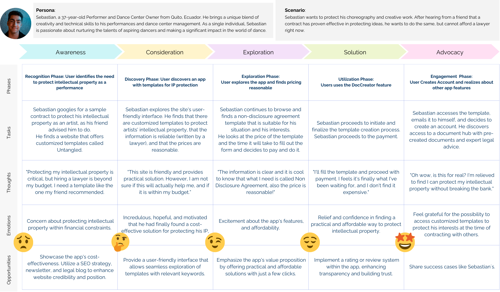
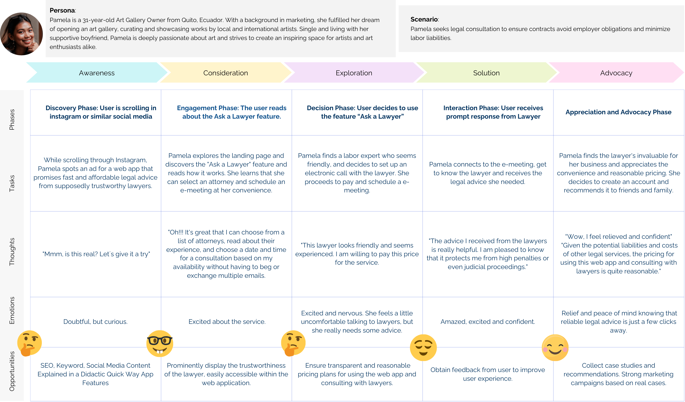

To address this challenges, an app application üì± was
designed, offering cost-effective access to trustworthy and convenient legal
advice, enabling entrepreneurs to resolve common legal
queries efficiently while saving valuable time and resources.
My Role:
♟️ Sole UX Designer, in collaboration with legal experts and
entrepreneurs.
Part of UX certification, Berlin.
üí°Design thinking was employed to tackle this challenge, comprising the
following 6 phases (click to see):
×
Empathize with the User
Research Goals
➡️ The very first step was to deeply understand the problems faced by entrepreneurs when seeking legal
advice. Hence, the main objectives of the research were:
Actions Taken: Identify entrepreneurs' steps for legal help.
Legal Needs: Understand their common legal requirements.
Frustrations: Uncover difficulties in obtaining legal advice.
Optimal Approach: Determine solutions for these needs and frustrations.
Research Approach
üìà Competitive Analysis: User insights, product gaps, and enhancement opportunities
üó£Ô∏è Surveys and Interviews: User insights, product gaps, and enhancement opportunities
Age Range: 28-54, typical Ecuadorian entrepreneurs.
User Priorities: Transparent payments, flexible payment methods, excellent customer service.
Legal Advice Sources: Trusted personal networks for basic legal issues; openness to legal apps.
Entrepreneurs' Needs: Extensive legal support, notably in tax, labor, and intellectual property (IP).
Tax Matters: Majority rely on accountants.
Common Legal Services: Model contracts, notarizations, affidavits, deeds, IP protection.
Legal Updates: News and social media as primary information sources.
Lawyer Consultation Frequency: Several times a year for most.
×
Define User Needs
During the Empathize phase, insights were consolidated and analyzed to identify core issues, leading to the
creation of a problem statement:
Problem Statement
Entrepreneurs face difficulties in obtaining timely, reliable, and
affordable legal
services
to safeguard their business interests. In response, a web application was developed to offer
cost-effective, easy access to
trustworthy legal advice and information, enabling entrepreneurs to address common legal questions
efficiently, saving time
and money.
Subsequently, to humanize the design process, personas were developed:
Personas Development
Sebastian
Pamela
User Journeys
A user journey illustrates the sequence of actions taken by someone using a product to achieve a goal.
Let's look at how Sebastian and Pamela would use the app for legal advice:
üíÅüèæ‚Äç‚ôÇÔ∏è Sebastian, wants to secure his intellectual property rights as a
performer. With a tight budget, he can't afford an expensive lawyer and needs an affordable solution:

üíÅü誂Äç‚ôÄÔ∏è Pamela, a small business owner, seeks legal consultation to
ensure contracts avoid employer obligations and minimize labor liabilities.

User Flows
User flows map out the steps users take to complete tasks within the app, crucial for understanding and
improving user experience. For each app feature, specific user flows are designed. The flows for the
features
"Ask a Lawyer" and "Legal DocCreator" are outlined to facilitate these tasks.
×
Ideate
üí° After thoroughly understanding the users and defining the problem, the Ideation Phase began.
üí≠ This phase involved brainstorming numerous possible solutions, leading to the development of a Sitemap
that outlines the structure of the web application.
✅ The Sitemap was refined using Card Sorting Results, which then paved the way for designing low and
mid-fidelity wireframes.
Card Sorting
Card sorting is a technique used in user research where participants organize content into categories,
which helps optimize the structure of websites and apps.
The open card sorting exercise provided key insights:
Many participants, unfamiliar with legal terms,
struggled to classify items accurately. Despite this, maintaining the
existing
legal categorization made sense (Ask a Lawyer and DocCreator as 2 separate features).
The exercise emphasized the importance of a comprehensive onboarding
process
to help users comprehend the application's functions and navigate it
effectively.
Also, to address user confusion, the feature Q&A section with FAQs should be added. Legal services can be complex
for non-lawyers.
The exercise highlighted the need to exclude "My legal documents" and "My lawyers' answers" from the "My
profile" section and remove several cards to simplify processes.
In response to the card sorting results and an usability test, the site map was modified a couple times to
align with user expectations of legal services, simplifying content
organization. Categories were minimized, enhancing the application's navigability and user comprehension:
×
Prototyping Solutions
From the site map design, inexpensive paper prototypes were developed and later refined into medium and high
fidelity prototypes, as you can see below:
1. Onboarding
The initial onboarding, which focused on consulting a lawyer and creating legal documents, was
restructured based on feedback and usability tests. The revised design now prominently features four main
functions: Ask a Lawyer, DocsCreator, Doc Access, and a Legal Updates Newsletter.
2. Ask a Laywer
The prototype was repeatedly redesigned to address usability issues.
Key improvements included changing order of steps and adding progress notifications for the 48-hour lawyer
response period, and enhancing its appeal by featuring a
network of verified lawyers with credible profiles.
3. Access to Docs
Initially, users accessed a "My Library" section for all app activities like past legal advice
and document creation. However, difficulties arose in locating specific "documents created" and "lawyers'
answers." Splitting these into two distinct sections enhanced navigation and comprehension. The subsequent
challenge involved deciding what information to feature on the home page to distinguish it from the "My
Profile" section.
4. Create a LegalDoc
Many users found it challenging to start the document creation process, often searching
extensively or
needing help. To address this, labels were added to the menu for clarity, aiming to enhance user
understanding and ease of navigation.
×
Testing Solutions
The medium fidelity prototype underwent several revisions informed by user feedback. Here are the outcomes
of the usability tests conducted on this version:
Research Objectives
1. Assess initial user interactions with the smartphone web app.
2. Determine the app's comprehension and perceived value.
3. Measure task completion and time.
4. Identify questions, needs, and errors during testing.
Tasks
Six users executed four tasks: scheduling a lawyer appointment, drafting a non-disclosure agreement,
retrieving legal documents, and reviewing a lawyer's response.
Methodology
1. Conducted moderated in-person tests with two residents from Ecuador in Berlin.
2. Performed moderated remote tests with four entrepreneurs in Quito, Ecuador.
Target Audience
Entrepreneurs aged 25-54 in Ecuador, representing a significant portion of the entrepreneurial
demographic
(source).
Environment
Remote testing was conducted using screen sharing on Microsoft Teams or Google Meetings. In-person
tests were sound-recorded at the user's home.
The data was organized into an Affinity Map and a Rainbow spreadsheet for visual feedback analysis.
Affinity Map
Report of Errors and Recommendations
üëçüèº Users appreciated the main features, the quick and easy process to schedule meetings, the form-filling
ease, the verification of information before creating legal documents, the visibility of lawyer profiles,
the search bar functionality, and the option to choose meeting times.
⚠️ The usability test revealed critical areas for improvement in design, feature visibility, and user
onboarding. Balancing the seriousness of legal matters with a user-friendly interface is key. Incorporating
direct and clear communication options will enhance user satisfaction and trust.
1. 'Create a Document' Feature: Users struggle to find the feature; recommended solution is to
rename the
icon to "DocCreator" and enhance the onboarding process.
2. Locating Created Documents: Difficulty in locating documents can be addressed by adding a "List
of
Documents Created" on the Home, "My Profile" or DocCreator category.
3. Finding Lawyers' Responses: To ease access to lawyers' responses,the icon should be
more descriptive and add "Ask a Lawyer."
4. Identifying User Profile: Users confuse the profile section with home, so it is needed to
differentiate profile information from, homepage content and main features.
5. Confirmation of Document Creation: Uncertainty about document readiness can be resolved by
implementing
a design that visually indicates readiness.
6. Verification of Legal Document Authenticity: Enhancing the layout to clearly signify the
authenticity
of legal documents can address verification issues.
7. Clarity in Document Lists: To improve document list clarity, distinct formatting and icons for
document
titles are recommended.
8. Clarification of Meeting Type: Confusion over meeting communication methods can be clarified by
specifying the method (e.g., Microsoft or Google Meetings).
9. Direct Contact with Lawyers: Improving system visibility, potentially with a progress bar, can
address issues in direct lawyer contact.
Two Personas Emerged
Two user categories emerged: financially privileged entrepreneurs who value app elegance and lower-income
users focused on affordability and ease of use.
Based on the goal of this project, feedback from the target persona of entrepreneurs in need of
affordable legal advice will be prioritized.
The Need to Alleviate Legal Service Concerns
During the usability tests, users expressed concerns about the cost and complexity of legal services.
Recognizing the need to create a calming and reassuring app environment, research was done on colors that
evoke calmness. Blue and green were identified as suitable choices for the legal app due to their calming
properties.
A color preference test was conducted to decide between the two, resulting in a strong preference for
blue, with 83% of participants favoring it over green. Blue was thus selected for the app's design,
supported by user feedback highlighting blue as a classic and trustworthy color.
Visual and Language Design
1. Blue was chosen as the main color after a preference test due to its association with trust.
2. Lawyer photos and a white background were used for a professional look.
3. Friendly, non-judgmental language was selected to make users feel supported and encourage open
engagement with legal issues.
The design of the Untangled app has evolved through a collaborative and iterative process, incorporating
feedback from UX peers and adhering to Gestalt Theory and Material
Design
Principles for high-fidelity wireframes. It boasts a clear, consistent layout with a calming blue
color scheme, although integration of technology to aid users with different abilities is still underway.
Acknowledgments
The design refinements have been significantly influenced by suggestions from fellow UX designers,
leading to a more sophisticated version of the app. Key features are established, yet "DocCreator" and
Chatbot functionalities require further development for enhanced performance.
User-Centered Approach
Ongoing evaluations are crucial for aligning with business objectives and maintaining pricing
accessibility. Regular user assessments focusing on UI testing, A/B testing, accessibility, and additional
usability testing are planned to ensure the app meets user expectations and needs.
Future Analyses
Separate analyses for different stakeholders such as lawyers and legal firms are planned to tailor the
service offerings to their requirements.
Reflecting on Design Changes
The web app has undergone considerable modifications from its inception. For instance, initial ambiguity
about the home screen's function was resolved by featuring a newsletter highlighting recent legal updates,
increasing user engagement and support for legal inquiries. The introduction of services like a regulatory
change newsletter has significantly influenced the overall design. While the UI has been enhanced through
tools like Figma and design principles, opportunities for improvement remain.
Distinctive Market Position
Untangled differentiates itself by catering specifically to Ecuadorian entrepreneurs, acknowledging the
unique challenges of the local regulatory environment. Its design prioritizes affordability and reliability
in
legal services, including a section for regulatory updates which is vital in dynamic legal contexts.
Enhancement Opportunities
Simplifying Forms: Incorporating AI could streamline the process of filling out lengthy forms,
boosting user interaction.
Personalization: Adding a feature for users to provide business-specific details could offer
more tailored legal advice and efficiency for lawyers.
Broadening User Base: While focusing on cost-conscious entrepreneurs, potential exists to also
attract affluent entrepreneurs seeking a sophisticated user experience.
Trust and Comfort: The design should continue to emphasize trust and tranquility, crucial for
users concerned with legal costs.
Legal Collaboration: Partnering with more legal professionals could provide a wider range of
services and pricing, adding value to the app.
Challenges and Tools
Usability Testing: Conducting tests solo was challenging. More extensive testing, especially in
person
with an assistant, could capture more nuanced feedback.
Legal Insights: Time constraints limited collaboration with legal professionals, an aspect that
could
greatly enrich the app's offerings.
Time Constraints: Additional time was required for the complete development of the DocsCreator
feature, for more complex documentation.
If it becomes a reality, it would be a dream for entrepreneurs.üëåüèº